You can look for the Array Method in the Serch BOX below ↓
This is Array Methodes Cheat Sheat :
- Array.isArray()
no change
Returns True or False.

- Array.Length
no change
Returns the number of elements in the Array.
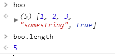 - Array.indexOf()
no change
Returns the First index value, where the element that is passed as an argument (inside the parenthesis), is found.
if the element is not present, the return vaue will be -1
note, that you can pass a second argument, where the index position count will start.


- Array.lastIndexOf()
no change
Returns the First index value, where the element that is passed as an argument is found, Starting the count from the END of the Array.
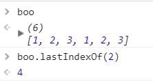 - Array.push()
change
Adds values (one or more), to the end of the Array.
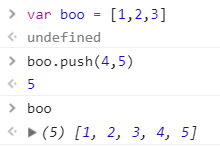
Returns the array's length - Array.pop()
change
Removes a value from the end of the Array.
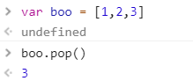
Returns the Value of the element that was removed.
if the array is empty, Returns Undefined - Array unshift()
change
Adds values (one or more), to the begining of the Array.
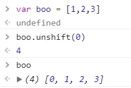
Returns the array's length - Array.shift()
change
Removes a value from the begining of the Array.
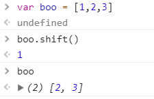
Returns the Value of the element that was removed.
if the array is empty, Returns Undefined - Array.toString()
no change
Returns the array, as one string seperated with a coma.
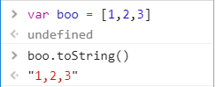
dosn't take argumants, or change the array. - Array.join()
no change
Returns the array, as a string. the argument passed in the perantesis will be the seporater in the output.
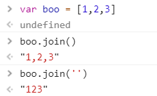
If invoked without argumants, returns a string seporated with a come.
- Array.reverse()
change
Changes the array In Place, returns the elements of the array reversed.
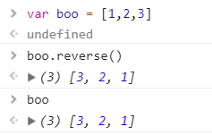
and stores it in the original array - Array.sort()
change
Sorts The Array elements in place, and returns the Sorted array
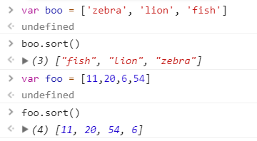
note ! - this method sorts by unicode, which means that the array is sorted by alphbetical order.
In order to sort array in other order, highest/ smallest number, then a
Compare Function is needed to be passed as an argument.Compere functions :
foo.sort((a,b) => { return a-b}) // Smallest
foo.sort((a,b) => { return b-a}) // Highest
- Array.concat()
no change
Crating a new array, by concatenating the arguments
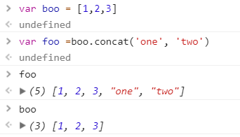
that are passed, when the method is calld.
Returns a New array - Array.slice()
no change
Creats a new Array, (A shllow copy of the original).
returns a Slice of the array.First argument, specifies the beginng of the new array, and will be included.
Second argument, specifies the end of the slice, and will not be included in the new array.If, only one argument is used, then the returned array will be from that point , till the end of the array.
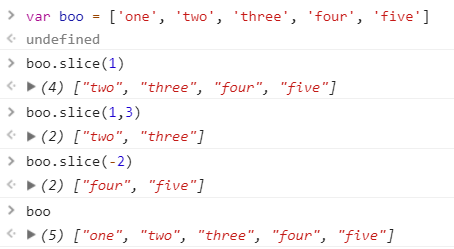
A negetive argument specified a count from the end point of the array.
Where -1 is the last alament. - Array.splice()
change
This method is a way to change the array, by adding or removing elements from the array.
Removing
When removing elements from the array,
it will return the Removed elments.The first argument, specifies the index positin
to start deleting / changing the array.
Second argument, specifies how many elemnts should be removed.
Adding
Any aditional argument will be added to the array, from the point of the first argument.
If the second argument is 0, then no elment will be removed.
If no argument is removed, then it will return an Empty Array.
- Array.forEach()
ES5change
Invokes a callback function that is passed as an argument, on each of the elmants in the array.
Returns undefined.First Argumant : A Callback function.
takes three argumants - Value, index & Array.
secend and third are optional.
Second argumant: Becomes the value of the This Keyword. optional.
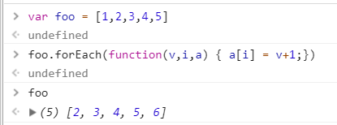 - Array.Map()
ES5no change
Creats a new array, by calling a function for each elament in the array.
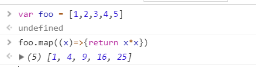
Returns a New array. - Array.reduce()
ES5no change
Invokes a function, on each element of the array,
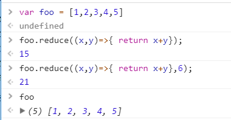
from left to right, against an accumulater.
Reduces the array, and Returns a singel Value.NOTE Difrent from the other ES5 methods.
Reduce callback function, taks 4 Parameters:Accumulater,
Current Value,
index,
& Array.
And it is optional to use an initiel value, as a second argument
of the function. - Array.reduceRight()
ES5no change
Similer to reduce,
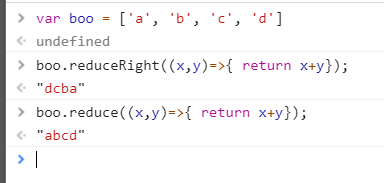
Invokes a function, on each element of the array,
From Right to Left, against an accumulater.
Reduces the array, and Returns a singel Value. - Array.filter()
ES5no change
Runs on each element in the original array,
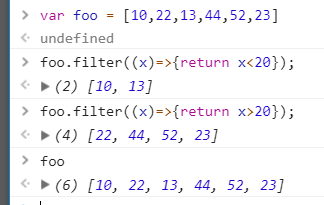
and tests it against a condition in the
callback function.
Returns a New Array, containing Elemnts that
return True to the functions condition. - Array.every()
ES5no change
Returns True or False.
Runs on each element in the original array,
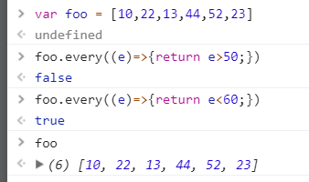
and tests if ALL elements in the array,
pass the condition in the
callback function.
Stopes at the first element that returns False. - Array.some()
ES5no change
Returns True or False.
Runs on each element in the original array,
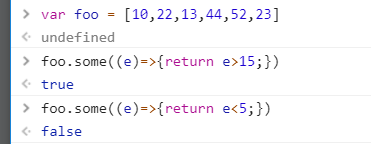
and tests if Some elements in the array,
pass the condition in the
callback function.
Stopes at the first element that returns True.Note ! If invoked on an empty Array,
some() will Return False,
and every() will Return True.
{kind=link}
{kind=link}
{kind=link}
{kind=link}
{kind=link}
{kind=link}
{kind=link}
{kind=link}
{kind=link}
{kind=link}
{kind=link}
{kind=link}
{kind=link}
{kind=link}
{kind=link}
{kind=link}
{kind=link}
{kind=link}
{kind=link}